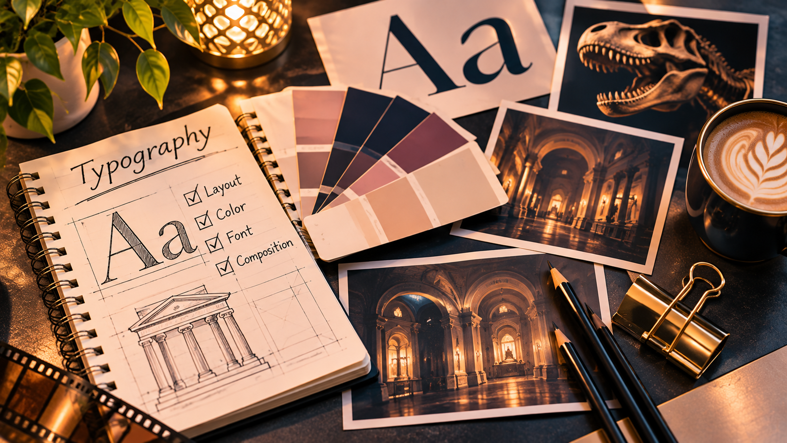
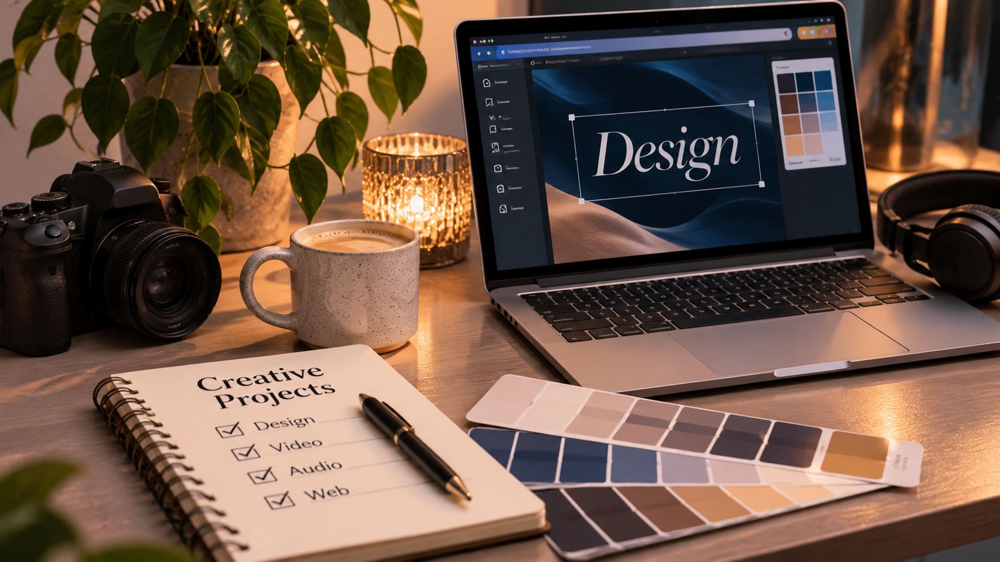

Bringing My Ideas to Life
One of my favorite parts of this course has been exploring different ways to express creativity through multimedia. I created my original song, Choosing Us, using Suno AI and produced a cinematic video teaser for my Midnight at the Museum project. Both experiences taught me how technology, storytelling, and creativity can come together to bring an idea to life.
See the Multimedia
From Imagination to Creation
Throughout this course, I've explored graphic design and learned how to transform creative ideas into visual projects. One of my favorite experiences was designing my Midnight at the Museum poster, where I combined imagery, typography, and storytelling. I also completed Canva Design School certifications, which helped me strengthen my design skills and become more confident in my creativity.
Explore ProjectsMy Pages
About Me
Learn more about me, my creative journey, and the new skills I've developed through multimedia design, technology, and storytelling.

Projects
Explore my creative projects, including my Midnight at the Museum poster, Canva designs, and the skills I've developed throughout this course.
Multimedia
Discover my original song Choosing Us, my Midnight at the Museum video teaser, and the digital artwork I've created throughout this course.
Let's Create Something Together!
Thank you for exploring my creative journey! Whether you're interested in my multimedia projects, have feedback to share, or simply want to connect, I'd love to hear from you.